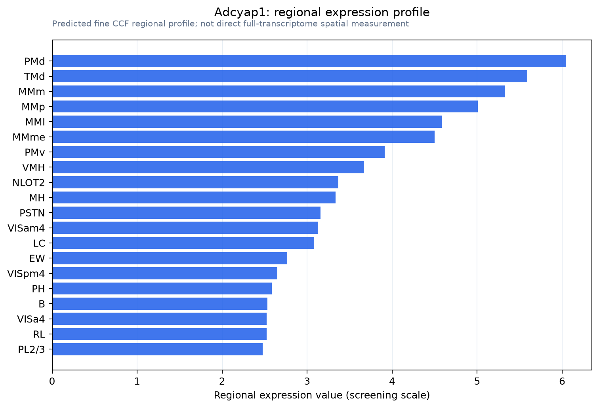

Adcyap1
Spatial tier: RESTRICTED · Class: OTHER · Top region: PMd (Dorsal premammillary nucleus) · Positive regions: 26/554
43.7Discovery Score
42.4Targetability Score
CEvidence grade C
What this means: Adcyap1: fine CCF profile is restricted toward PMd (top regions: PMd, TMd, MMm, MMp, MMl; 26 positive regions); direct spatial validation is still required.
Direct spatial evidence
MERFISH REGION LOCATOR

Regional expression figure

Predicted WMB × fine-CCF profile; not direct full-transcriptome spatial measurement.
Spatial profile
Evidence and specificity
- Evidence status
- PREDICTED_FINE
- Direct sources
- None; predicted localization only
- Exclusive threshold
- 12 positive regions out of 554
- Spatial specificity
- 0.304
- Top-region fraction
- 0.051
- Filter status
- PASS
Interpretation limits
- Cell-type-to-region projection is imputed expression, not direct spatial measurement.
- Adult reference atlases do not establish stability across age, sex, strain, state, or disease.
- Transcript abundance does not guarantee protein abundance or genetic-tool performance.